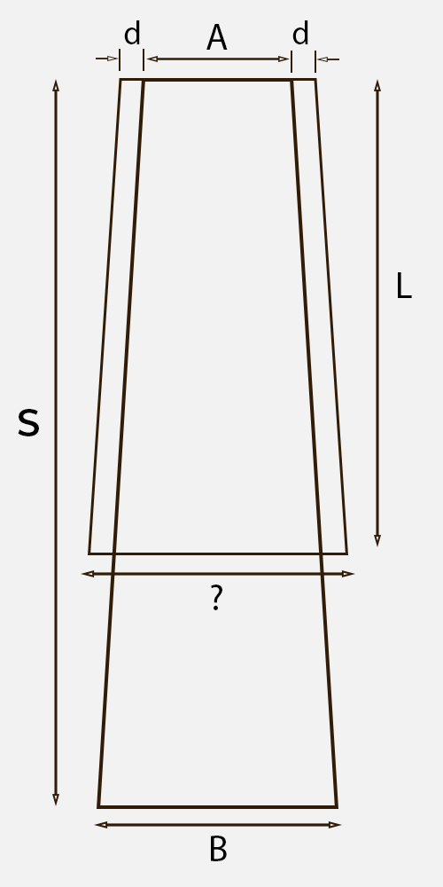

☰
✖
Home
Journal
Calculators
Patreon
About
Fretboard Taper Calculator
Unit:
Millimeters (mm)
Inches (in)
String spread at nut (A):
String spread at bridge (B):
Outer strings to edge distance (d):
Scale length (S):
Length of fretboard (L):
Calculate Width at End
